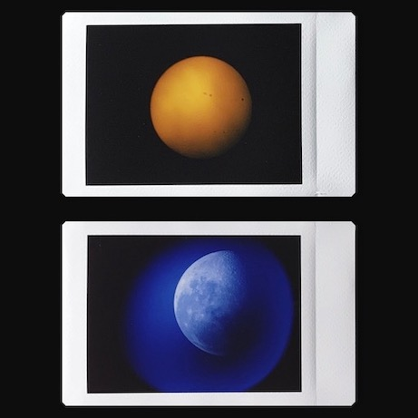
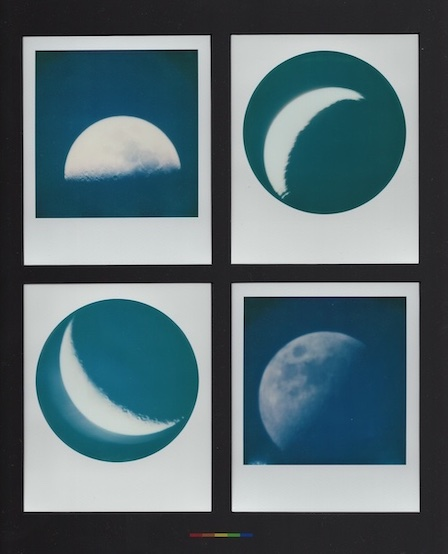

The Moon Talkers
Art and Astronomy by Jade Aster
From August 27 - September 24, I will be the artist in residence at Lamplight AVL, an organization in Asheville that supports artists by providing time, space, and resources to create art they can share with the local community. During that time, I will be photographing the sun and moon, capturing astronomical details on small pieces of instant film. I will be popping up around Asheville all month long to share my telescope with curious folks as I take the photographs. Due to a dependence on weather, the pop-ups will be impromptu style with details posted on Instagram.
Join us on Saturday, September 20 from 1-4pm at Lamplight AVL for a viewing of the photographs taken throughout the residency.
Using a telescope and an instant film camera (Polaroid and Instax), I carefully align the camera lens to the eyepiece of the telescope to take my photographs. Within seconds, lunar craters and sunspots appear as the film develops. For all solar photography, I use a solar filter attached to my telescope. I then design and create framed art pieces using the instant film, hand cut matting, and second hand frames. For sales, please see the about page for contact details. My artwork will soon be available at the Marquee!


The realization that every person - past, present, and future - shares the same moon, is a thought that has brought me comfort since I was a child. To think that when I look up at the moon one moment, and in just a few hours someone across the world will look to the same moon, it is an acknowledgement that we are not so far from one another. We are not so different from one another. We will always have this point of connection.
My hope for creating these photographs and engaging with my community through telescope pop-ups is to encourage us all to be more curious about the different kinds of art we can make and explore creative ways to share it!
To contact me, please send me a message on Instagram @themoontalkers or by email at themoontalkers@gmail.com.